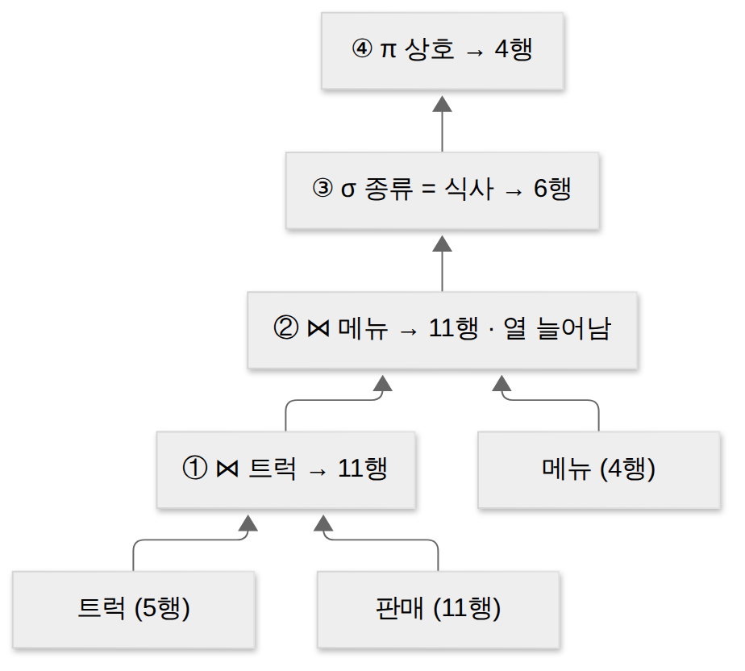

D045 · 푸드트럭 골목 ‘먹자로’로 푸는 관계해석 — ‘무엇을’만 적는 주문서(∃·∀)와 관계대수 손풀이
B3 어제 D044에서 관계대수로 “어떤 순서로 표를 만지면 답이 나오나”를 적었어요. 오늘은 같은 질문을 순서 없이, 원하는 결과의 조건만 적는 언어, 관계해석이에요. 관계해석 자체는 최근 20회 중 5회, “모든 것에 대하여” 기호(∀) 고르기는 4회지만, 관계대수 문제(18회)의 단골 함정이 늘 관계해석과 이름표를 바꿔 다는 방식이라 짝으로 알아야 해요. 후반은 어제 배운 σ · π · ⋈ · ÷ · ×를 작은 표로 직접 계산해 보는 손풀이 세트예요. 오늘 예시는 구청이 만드는 푸드트럭 골목 ‘먹자로’ 앱이에요.
- 관계해석이 비절차적(무엇만 기술, 프레디킷 해석 기반)이고 관계대수(절차적)와 표현력이 같다는 점을 설명하고, “관계대수가 프레디킷 해석에 기반한다”는 뒤바꾼 선지를 걸러낼 수 있다
- 튜플 관계해석(튜플 변수)과 도메인 관계해석(도메인 변수)을 구별하고, ∀ · ∃ · ∈ · ∧ · ∨ · ¬를 식에서 읽어 말로 옮길 수 있다
- { t | t ∈ R ∧ 조건 } 꼴의 식을 읽어 결과 튜플을 구하고, 같은 질의를 관계대수 · SQL로 바꿔 말할 수 있다
- π(σ(R ⋈ S))의 결과 표, ÷의 결과(속성 R − S), 카티션 곱의 차수 · 카디널리티를 직접 구하고 SQL로 옮길 수 있다
1부 (약 20분)
2부 (약 19분)
0. 앱 담당자의 메모 두 장
구청 일자리경제과 주무관이 푸드트럭 골목 ‘먹자로’ 앱의 검색 기능을 기획하고 있어요. 첫 요구는 “커피 파는 트럭이 어디야?”예요. 주무관은 개발팀에 넘길 메모를 두 가지로 써 봐요. 처음 일하는 주방에 붙이는 메모라면 “반죽하고, 굽고, 담으세요”처럼 순서를 적고, 단골 손님이 하는 말이라면 “호떡 하나요”처럼 원하는 결과만 말하죠. 데이터베이스에서도 똑같아요. 앞쪽이 어제의 관계대수, 뒤쪽이 오늘의 관계해석이에요.
등장하는 표는 셋이에요. 트럭(트럭, 상호, 지역) 5행, 메뉴(메뉴, 이름, 종류, 가격) 4행, 어떤 트럭이 어떤 메뉴를 파는지 적은 판매(트럭, 메뉴) 11행. 식사 메뉴가 타코(M2) · 꼬치(M4) 둘이라 “식사를 하나라도 파는 트럭”과 “식사를 모두 파는 트럭”이 다르게 나오도록 만들었어요. 용어는 그대로예요 — 표 = 릴레이션, 행 = 튜플, 열 = 속성(D043), 연산 기호 σ · π · ⋈ · ÷ · ×는 D044.
1. 장면 1 — 관계해석이란: “어떻게”가 아니라 “무엇”만 적는 언어
관계해석의 정의 — 왜 언어가 하나 더 있나
정의: 관계해석(relational calculus)은 원하는 정보가 무엇인지를 수학의 프레디킷 해석(predicate calculus, 술어 논리)으로 기술하는 질의 언어예요. “어떤 연산을 어떤 순서로”는 적지 않고, 결과에 들어갈 튜플이 만족해야 할 조건만 적어요. 관계 모델을 만든 E. F. Codd가 관계대수와 함께 제안했어요. 종류는 변수가 무엇을 가리키느냐에 따라 튜플 관계해석과 도메인 관계해석 두 가지예요(장면 2).
왜 언어가 둘이나 필요했을까요? 관계대수는 DBMS가 실제로 실행할 연산 순서를 표현하기 좋지만, 사람이 질문을 떠올리는 방식과는 거리가 있어요. 사람은 “커피를 파는 트럭”이라고 생각하지 “트럭과 판매를 조인한 다음 메뉴로 걸러야지”라고 생각하지 않거든요. 관계해석은 사람의 질문을 논리식으로 그대로 옮긴 쪽이고, 어떤 순서가 빠른지는 DBMS가 알아서 정해요. 실제로 SQL의 WHERE · EXISTS는 관계해석의 영향을 크게 받았어요 — SQL은 “무엇을 원하는지”를 적는 언어에 가까워요.
비절차적 — 순서를 적지 않는다
비절차적(nonprocedural)이란 결과를 얻는 과정을 사용자가 적지 않는다는 뜻이에요. 주문서에는 “몇 도에서 몇 분 굽는지”가 없어요. 있어도 주방 마음이에요 — 그게 비절차적이에요. 관계해석 식 안의 조건들은 어느 것을 먼저 검사하든 결과가 같고, 식 어디에도 “먼저 · 다음”이 없어요. 출제자는 이 주문서에 슬쩍 “연산 순서를 명시하는 절차적 언어”라는 문장을 적어 놓고 “이 주문서, 이상하지 않나요?” 하고 묻는 거예요.
관계대수와 표현력이 같다 — 관계적 완전
그럼 둘 중 어느 쪽이 더 많은 질의를 표현할까요? 같아요. 관계대수로 쓴 질의는 모두 관계해석으로 쓸 수 있고, 관계해석의 (결과가 유한하게 정해지는) 안전한 식은 모두 관계대수로 쓸 수 있어요. 이것을 두 언어의 표현력이 동등하다고 하고, 이 정도의 표현력을 갖춘 질의 언어를 관계적으로 완전하다(relationally complete)고 해요. 그래서 “관계대수로 표현한 식은 관계해석으로 표현할 수 있다”는 옳은 선지예요. 두 언어의 차이는 표현할 수 있는 범위가 아니라 적는 방식이에요.
알아 두기(시험 밖): “안전한 식”이라는 단서는 { t | ¬트럭(t) }처럼 “트럭이 아닌 모든 것”을 묻는 식 때문이에요. 이런 식은 세상의 모든 값이 답이 되어 결과가 끝없이 커지니, 결과가 데이터 안에서 정해지는 식만 인정해요. 이 증명을 Codd 정리라고 불러요.
관계대수와 이름표 바꿔치기 관계대수 기출 18회
시험이 관계해석을 묻는 방식은 사실상 하나예요. 관계대수와 관계해석에 붙는 설명을 서로 바꿔 다는 거예요. 정리하면 관계대수 = 절차적 = 어떻게(How) = 연산 순서를 적음 = 순수 관계 · 일반 집합 연산자, 관계해석 = 비절차적 = 무엇(What) = 프레디킷 해석 기반 = 튜플 · 도메인 관계해석이에요. “프레디킷 해석 기반”이라는 명찰은 해석의 것이에요. 대수에게 그 명찰을 달아 놓은 선지는 이름표 바꿔치기 — 시험장의 가장 흔한 몰래카메라예요. 거꾸로 해석에 “절차적”을 붙이거나, 아예 “둘 다 절차적”으로 묶어 버리는 선지도 같은 몰래카메라예요.
| 가르는 질문 | 관계대수 | 관계해석 |
|---|---|---|
| 무엇을 적나? | 연산 순서(How) | 결과의 조건(What) |
| 성격 | 절차적 | 비절차적 |
| 바탕 | 집합 · 관계 연산자의 조합 | 프레디킷 해석(술어 논리) |
| 종류 | 순수 관계 연산자 · 일반 집합 연산자 | 튜플 관계해석 · 도메인 관계해석 |
| 표현력 | 같다(관계적 완전) | 같다(관계적 완전) |
2. 장면 2 — 식 읽는 법: { t | 조건 }
튜플 관계해석 식의 생김새와 구성 요소
정의: 튜플 관계해석은 튜플 변수(릴레이션의 행 하나를 가리키는 변수)를 써서 원하는 튜플의 조건을 적는 관계해석이에요. 기본 꼴은 { t | P(t) }이고 “조건 P(t)를 참으로 만드는 모든 튜플 t의 집합”이라고 읽어요. 수학 시간에 본 집합 표기 { x | x > 3 }와 같은 문법이에요.
식 하나를 부품으로 나누면 네 가지가 나와요. 튜플 변수는 t처럼 행을 가리키는 이름이에요. 한정 애트리뷰트는 t.지역처럼 튜플 변수에 점을 찍어 꺼낸 속성이에요(“t의 지역”). 원자식은 참 · 거짓을 판정하는 가장 작은 조건으로 세 꼴이 있어요 — 트럭(t)처럼 “t는 트럭 릴레이션의 튜플이다”(t ∈ 트럭으로도 써요), t.지역 = '마포'처럼 속성과 상수 비교, s.트럭 = t.트럭처럼 속성끼리 비교. 마지막으로 정형식(well-formed formula)은 원자식들을 논리 연산자와 정량자로 엮어 만든 올바른 조건식 전체예요.
{ t | 트럭(t) ∧ t.지역 = '마포' }를 말로 옮기면 “트럭 릴레이션의 튜플 t 중에서 지역이 마포인 것 전부”예요. 관계대수로는 σ지역='마포'(트럭), SQL로는 WHERE 지역 = '마포'이에요. 결과의 열을 줄이고 싶으면 막대 왼쪽에 t.상호처럼 속성만 적어요 — { t.상호 | … }는 대수의 π 역할이에요.
결과는 호떡네 · 타코왕 · 식사천국 3행, 3열이에요. 식에는 “트럭 표를 처음부터 훑어라” 같은 말이 없는데, 실행기는 알아서 방법을 골라요(인덱스가 있으면 인덱스로).
도메인 관계해석 — 변수가 값 하나를 가리킨다
정의: 도메인 관계해석은 튜플 변수 대신 도메인 변수를 쓰는 관계해석이에요. 도메인 변수 하나는 속성 하나의 값을 가리키고, 그 속성의 도메인(가질 수 있는 값의 집합)을 범위로 가져요. 그래서 행 하나를 ⟨x, y, z⟩처럼 값의 묶음으로 적고, “이 묶음이 트럭 릴레이션에 있다”를 ⟨x, y, z⟩ ∈ 트럭으로 써요. 기본 꼴은 { ⟨x1, …, xn⟩ | P(x1, …, xn) }예요.
비유하면 튜플 변수는 줄 서 있는 손님 한 명 전체를 가리키고, 도메인 변수는 그 손님의 이름표 · 번호표 한 장씩을 가리켜요. 같은 질문 “성수에 있는 트럭의 번호와 상호”를 튜플 해석은 { t.트럭, t.상호 | 트럭(t) ∧ t.지역 = '성수' }, 도메인 해석은 { ⟨x, y⟩ | ⟨x, y, z⟩ ∈ 트럭 ∧ z = '성수' }로 적어요. 막대 왼쪽에 x, y만 적었으니 지역(z)은 결과에서 빠져요.
결과는 (T2, 만물차) · (T4, 카페차) 2행, 2열이에요. 두 해석은 변수를 잡는 단위(행 하나 vs 값 하나)만 다르고 표현력은 같아요. 시험은 “관계해석에는 튜플 관계해석과 도메인 관계해석이 있다”를 옳은 선지로 내는 정도예요.
논리 연산자 ∧ · ∨ · ¬ 와 소속 기호 ∈
원자식을 잇는 논리 연산자는 셋이에요. ∧(AND, 그리고)는 두 조건이 모두 참일 때, ∨(OR, 또는)는 하나라도 참일 때, ¬(NOT, 부정)은 조건을 뒤집을 때 써요. 같은 트럭에 대해 “간식 판매가 있다 ∧ 음료 판매가 있다”를 적으면 두 집합의 교집합, ∨로 적으면 합집합, “커피 판매가 있다”에 ¬를 씌우면 전체에서 뺀 차집합과 같은 효과가 나요. 대수의 ∩ · ∪ · −가 해석에서는 ∧ · ∨ · ¬로 바뀌는 셈이에요.
∈(원소)는 “왼쪽이 오른쪽 집합의 원소다”라는 소속 기호예요. t ∈ 트럭은 “t는 트럭 릴레이션의 튜플”, ⟨x, y, z⟩ ∈ 트럭은 “이 값 묶음이 트럭에 있다”예요. 변수의 범위를 정해 주는 원자식일 뿐 “모든 · 존재” 같은 정량자가 아니에요.
첫 상자는 호떡네 · 카페차 2행(두 조건의 교집합), 둘째는 타코왕 · 식사천국 2행이에요. 다섯 곳 중 커피를 파는 세 곳을 뺀 나머지라 차집합과 결과가 같아요. 두 상자에 들어간 EXISTS가 바로 다음 장면의 주인공 ∃예요.
3. 장면 3 — 정량자: ∃는 하나라도, ∀는 모두 기출 4회
∃ 존재 정량자 — “하나라도 있다”
정의: ∃(there exists, 존재 정량자)는 “조건을 만족하는 값이 적어도 하나 존재한다”는 뜻이에요. ∃s(판매(s) ∧ s.트럭 = t.트럭 ∧ s.메뉴 = 'M3')는 “트럭 t에 대해, 커피를 파는 판매 기록 s가 하나라도 있다”예요. 결과에 s를 돌려주지 않으니 s는 식 안에서만 쓰고 사라지는 변수예요. 영어 Exists의 E를 좌우로 뒤집은 모양이라고 외워요.
∃는 탐정이에요. “이 골목에 커피 파는 트럭이 있나?”를 맡으면 한 곳만 찾아도 바로 퇴근해요. 트럭마다 판매 칩을 하나씩 보다가 M3를 발견하는 순간 참으로 판정하고, 끝까지 하나도 없을 때만 거짓이에요.
커피는 호떡네 · 만물차 · 카페차 3곳, 식사를 하나라도 파는 트럭은 호떡네만 빼고 4곳이에요. SQL의 EXISTS (부질의)는 ∃를 글자 그대로 옮긴 것이에요.
∀ 전칭 정량자 — “모두 그렇다”
정의: ∀(for all, 전칭 정량자)는 “범위 안의 모든 값이 조건을 만족한다”는 뜻이에요. “식사를 모두 파는 트럭”은 { t | 트럭(t) ∧ ∀m(메뉴(m) ∧ m.종류 = '식사' → ∃s(판매(s) ∧ s.트럭 = t.트럭 ∧ s.메뉴 = m.메뉴)) }예요. 화살표(→)는 “~이면”이라 “메뉴 m이 식사라면, t가 m을 판 기록이 있다”를 모든 m에 대해 요구해요. All의 A를 위아래로 뒤집은 모양이에요.
∀는 깐깐한 검사관이에요. “이 골목 트럭 전부가 영업증을 갖고 있나?”를 맡으면 한 대라도 없는 순간 “아니요”라고 하고, 모두 확인해야만 “예”라고 해요. ∃가 하나만 찾으면 참인 것과 정반대로, ∀는 반례 하나면 거짓이에요.
| 트럭 | 상호 | M2 타코 | M4 꼬치 | 판정 |
|---|---|---|---|---|
| T1 | 호떡네 | ○ | ○ | 검사 중… |
| T2 | 만물차 | ● | ● | |
| T3 | 타코왕 | ● | ○ | |
| T4 | 카페차 | ● | ○ | |
| T5 | 식사천국 | ● | ● |
식사 메뉴는 M2 타코와 M4 꼬치 둘이에요. ∀는 트럭마다 “식사 메뉴 전부에 대해 판매 기록이 있나”를 물어요. 첫 트럭 T1부터 볼게요.
| 트럭 | 상호 | M2 타코 | M4 꼬치 | 판정 |
|---|---|---|---|---|
| T1 | 호떡네 | ○ | ○ | ✗ M2 없음 — 첫 칸에서 탈락 |
| T2 | 만물차 | ● | ● | 검사 중… |
| T3 | 타코왕 | ● | ○ | |
| T4 | 카페차 | ● | ○ | |
| T5 | 식사천국 | ● | ● |
① T1 호떡네: M2부터 없어요. 반례가 하나 나왔으니 M4는 볼 필요도 없이 거짓이에요. ∀는 한 칸만 비어도 끝나요.
| 트럭 | 상호 | M2 타코 | M4 꼬치 | 판정 |
|---|---|---|---|---|
| T1 | 호떡네 | ○ | ○ | ✗ M2 없음 — 첫 칸에서 탈락 |
| T2 | 만물차 | ● | ● | ✓ 둘 다 있음 |
| T3 | 타코왕 | ● | ○ | 검사 중… |
| T4 | 카페차 | ● | ○ | |
| T5 | 식사천국 | ● | ● |
② T2 만물차: M2 ●, M4 ● — 두 칸 다 채워져 참이에요. M3 커피를 더 파는 건 상관없어요.
| 트럭 | 상호 | M2 타코 | M4 꼬치 | 판정 |
|---|---|---|---|---|
| T1 | 호떡네 | ○ | ○ | ✗ M2 없음 — 첫 칸에서 탈락 |
| T2 | 만물차 | ● | ● | ✓ 둘 다 있음 |
| T3 | 타코왕 | ● | ○ | ✗ M4 없음 |
| T4 | 카페차 | ● | ○ | ✗ M4 없음 |
| T5 | 식사천국 | ● | ● | 검사 중… |
③ T3 타코왕 · ④ T4 카페차: 둘 다 M2는 팔지만 M4가 없어 거짓이에요. “하나라도 판다”였다면 통과했을 트럭들이에요.
| 트럭 | 상호 | M2 타코 | M4 꼬치 | 판정 |
|---|---|---|---|---|
| T1 | 호떡네 | ○ | ○ | ✗ M2 없음 — 첫 칸에서 탈락 |
| T2 | 만물차 | ● | ● | ✓ 둘 다 있음 |
| T3 | 타코왕 | ● | ○ | ✗ M4 없음 |
| T4 | 카페차 | ● | ○ | ✗ M4 없음 |
| T5 | 식사천국 | ● | ● | ✓ 둘 다 있음 |
⑤ T5 식사천국: 두 칸 다 ● — 참. 결과는 {만물차, 식사천국} 2곳이에요.
| 질문 | 정량자 | 결과 |
|---|---|---|
| 식사 메뉴를 하나라도 판다 | ∃ | 만물차 · 타코왕 · 카페차 · 식사천국 (4) |
| 식사 메뉴를 모두 판다 | ∀ | 만물차 · 식사천국 (2) |
⑥ 같은 데이터, 같은 조건에서 정량자만 ∃ → ∀로 바꾸면 4곳이 2곳으로 줄어요. 시험에서 “모든”과 “어떤”을 바꿔 읽으면 답이 바뀌는 이유예요.
∀ = ¬∃¬ — SQL의 NOT EXISTS 두 번과 ÷
SQL에는 FOR ALL이라는 문법이 없어요. 대신 “전부 갖췄다”를 “못 갖춘 게 하나도 없다”로 바꿔 말해요. 논리식으로는 ∀m P(m) ≡ ¬∃m ¬P(m)이에요. “안 파는 식사 메뉴가 존재하지 않는 트럭”이 되니까 NOT EXISTS 안에 NOT EXISTS가 한 번 더 들어가요. 어색한 이중 부정처럼 보이지만 사실은 가장 정직한 번역이에요. 그리고 이 질문 “S의 값을 모두 가진 R의 값”은 어제 본 디비전(÷)과 같은 질문이에요 — 장면 6에서 손으로 확인해요.
결과는 만물차 · 식사천국 2행이에요. 애니메이션의 ∀ 판정과 같아요. 바깥 NOT EXISTS가 ¬∃, 안쪽 NOT EXISTS가 안쪽 ¬예요.
알아 두기(시험 밖): 결과는 5곳 전부예요. 검사할 디저트 메뉴가 하나도 없으니 반례도 없고, 반례가 없으면 ∀는 참이에요. “검사 대상이 0개인 전수 검사는 늘 통과”라는 논리의 성질이라 실무 쿼리에서 가끔 놀라는 지점이에요.
기호 여섯 개 한 번에
원장 이름으로는 관계해석 기호(∀·∃·∈)예요. 정리하면 관계해석에서 쓰는 기호는 논리 연산자 셋(∨ · ∧ · ¬), 정량자 둘(∀ · ∃), 그리고 변수의 범위를 말하는 소속 기호 ∈예요. 시험이 묻는 건 거의 “모든 것에 대하여 = ∀” 하나인데, 오답 선지가 늘 ∃(반대 정량자)와 ∈ · ⊂(집합 기호)로 채워져요.
4. 장면 4 — 같은 질의를 세 언어로: 대수 · 해석 · SQL
표현력이 같다는 건 한 언어로 쓴 질의를 다른 언어로 옮길 수 있다는 뜻이에요. 옮기는 규칙은 생각보다 단순해요. 대수의 셀렉트 조건은 해석에서 ∧로 붙는 조건이 되고, 조인은 “같은 값을 가진 다른 릴레이션의 튜플이 존재한다”(∃ + 등호)가 되고, 프로젝트는 막대 왼쪽에 남길 속성만 적는 일이 돼요. 결과에 필요 없는 변수(판매 s처럼)는 ∃로 묶어 식 안에 가둬요. SQL은 FROM에 릴레이션, WHERE에 조건을 적어 해석과 거의 같은 모양이지만, JOIN을 쓰면 대수에 가까워 보이기도 해요.
| 질의 | 관계대수(레시피) | 튜플 관계해석(주문서) | SQL |
|---|---|---|---|
| 마포 트럭 | σ지역=마포(트럭) | { t | 트럭(t) ∧ t.지역 = 마포 } | SELECT * FROM 트럭 WHERE 지역 = '마포' |
| 커피 파는 트럭의 상호 | π상호(σ메뉴=M3(트럭 ⋈ 판매)) | { t.상호 | 트럭(t) ∧ ∃s(판매(s) ∧ s.트럭 = t.트럭 ∧ s.메뉴 = M3) } | WHERE EXISTS (… s.메뉴 = 'M3') |
| 커피를 안 파는 트럭 | π트럭(트럭) − π트럭(σ메뉴=M3(판매)) | { t | 트럭(t) ∧ ¬∃s(판매(s) ∧ s.트럭 = t.트럭 ∧ s.메뉴 = M3) } | WHERE NOT EXISTS (…) |
| 식사를 모두 파는 트럭 | 판매 ÷ π메뉴(σ종류=식사(메뉴)) | { t | 트럭(t) ∧ ∀m(식사 메뉴(m) → ∃s(…)) } | NOT EXISTS (… NOT EXISTS …) |
| 트럭 | 상호 | 지역 |
|---|---|---|
| T1 | 호떡네 | 마포 |
| T2 | 만물차 | 성수 |
| T3 | 타코왕 | 마포 |
| T4 | 카페차 | 성수 |
| T5 | 식사천국 | 마포 |
재료는 트럭 5행과 판매 11행이에요. 레시피(관계대수)는 이 재료를 어떤 순서로 만질지 적고, 주문서(관계해석)는 어떤 결과를 원하는지만 적어요. 레시피부터 따라가 볼게요.
| 트럭 | 상호 | 메뉴 |
|---|---|---|
| T1 | 호떡네 | M1 |
| T1 | 호떡네 | M3 |
| T2 | 만물차 | M2 |
| T2 | 만물차 | M3 |
| T2 | 만물차 | M4 |
| T3 | 타코왕 | M2 |
| T4 | 카페차 | M1 |
| T4 | 카페차 | M2 |
| T4 | 카페차 | M3 |
| T5 | 식사천국 | M2 |
| T5 | 식사천국 | M4 |
레시피 ① 트럭 ⋈ 판매: 트럭 번호가 같은 짝만 붙여 11행이에요. (5 × 11 = 55쌍을 다 만든 뒤 트럭이 같은 것만 남긴 것과 같아요.)
| 트럭 | 상호 | 메뉴 |
|---|---|---|
| T1 | 호떡네 | M1 |
| T1 | 호떡네 | M3 |
| T2 | 만물차 | M2 |
| T2 | 만물차 | M3 |
| T2 | 만물차 | M4 |
| T3 | 타코왕 | M2 |
| T4 | 카페차 | M1 |
| T4 | 카페차 | M2 |
| T4 | 카페차 | M3 |
| T5 | 식사천국 | M2 |
| T5 | 식사천국 | M4 |
레시피 ② σ메뉴=M3: 메뉴가 커피인 행만 남겨 3행이에요.
| 상호 |
|---|
| 호떡네 |
| 만물차 |
| 카페차 |
레시피 ③ π상호: 상호 열만 남겨요. 결과 3행. 여기까지 연산 세 개를 순서대로 적었어요.
| 상호 |
|---|
| 호떡네 |
| 만물차 |
| 카페차 |
주문서: { t.상호 | 트럭(t) ∧ ∃s(판매(s) ∧ s.트럭 = t.트럭 ∧ s.메뉴 = M3) } — “커피 판매 기록이 존재하는 트럭의 상호”라는 조건 한 문장이에요. 조인을 먼저 할지, 커피 판매부터 거를지는 적지 않았는데도 결과는 같은 3행이에요.
애니메이션에서 레시피는 연산 세 개를 순서대로 적었고(11행 → 3행 → 3행), 주문서는 조건 한 문장이었어요. 결과는 같아요. 실무에서 우리가 쓰는 SQL을 DBMS가 받으면, 내부에서는 이 주문서를 레시피(실행 계획)로 바꿔요. 그 레시피 중 가장 빠른 것을 고르는 일이 질의 최적화예요. 그러니 관계해석은 “사람이 쓰는 쪽”, 관계대수는 “기계가 실행하는 쪽”의 이론이라고 봐도 돼요.
5. 장면 5 — 손풀이 세트 ①: σ · ⋈ · π 조합 프로젝트 기출 11회
손풀이는 계산기를 켜기 전에 연필로 한 번 해 보는 몸풀기예요 — 시험장에서는 실행 상자도 계산기도 없거든요. 아래 다섯 문제를 먼저 종이에 풀고, 애니메이션 · 그림 · 실행 상자로 확인하세요. 어제 D044에서 연산의 정의를 봤으니 오늘은 “결과 표가 어떻게 생기나”만 따라가요.
| # | 문제 | 확인하는 곳 |
|---|---|---|
| 1 | π상호(σ지역=마포(트럭))의 결과는? | 장면 2 첫 실행 상자 + 아래 문단 |
| 2 | π상호(σ종류=식사(트럭 ⋈ 판매 ⋈ 메뉴))의 중간 행 수와 결과는? | 애니메이션 · 그림 8 |
| 3 | 판매 ÷ π메뉴(σ종류=식사(메뉴))의 결과와 결과 속성은? | 장면 6 그림 9 |
| 4 | 트럭 × 메뉴(가격 열 제외)의 차수와 카디널리티는? | 장면 6 애니메이션 · 그림 10 |
| 5 | 2번 식을 SQL로 옮기면? | 애니메이션 마지막 단계 · 실행 상자 |
1번은 몸풀기예요. σ지역=마포가 먼저 3행(호떡네 · 타코왕 · 식사천국)을 남기고, π상호가 상호 열만 남겨요. 상호는 모두 달라서 중복 제거로 줄어드는 행이 없으니 3행이에요. 순서를 거꾸로 해서 π상호를 먼저 하면 지역 열이 사라져 σ지역=마포를 걸 수 없어요 — 조합식에서 괄호 순서가 중요한 이유예요.
| 트럭 | 상호 | 지역 |
|---|---|---|
| T1 | 호떡네 | 마포 |
| T2 | 만물차 | 성수 |
| T3 | 타코왕 | 마포 |
| T4 | 카페차 | 성수 |
| T5 | 식사천국 | 마포 |
손풀이 2번 문제예요. 결과를 먼저 종이에 적어 본 뒤 넘기세요. 식은 바깥의 π부터 읽히지만, 계산은 가장 안쪽 괄호부터예요.
| 트럭 | 상호 | 메뉴 | 종류 |
|---|---|---|---|
| T1 | 호떡네 | M1 | 간식 |
| T1 | 호떡네 | M3 | 음료 |
| T2 | 만물차 | M2 | 식사 |
| T2 | 만물차 | M3 | 음료 |
| T2 | 만물차 | M4 | 식사 |
| T3 | 타코왕 | M2 | 식사 |
| T4 | 카페차 | M1 | 간식 |
| T4 | 카페차 | M2 | 식사 |
| T4 | 카페차 | M3 | 음료 |
| T5 | 식사천국 | M2 | 식사 |
| T5 | 식사천국 | M4 | 식사 |
① ② 트럭 ⋈ 판매 ⋈ 메뉴: 트럭 번호, 메뉴 번호가 같은 짝을 차례로 붙여요. 판매 기록마다 한 행이라 11행 그대로이고, 열은 상호 · 종류 등이 붙어 늘어나요.
| 트럭 | 상호 | 메뉴 | 종류 |
|---|---|---|---|
| T1 | 호떡네 | M1 | 간식 |
| T1 | 호떡네 | M3 | 음료 |
| T2 | 만물차 | M2 | 식사 |
| T2 | 만물차 | M3 | 음료 |
| T2 | 만물차 | M4 | 식사 |
| T3 | 타코왕 | M2 | 식사 |
| T4 | 카페차 | M1 | 간식 |
| T4 | 카페차 | M2 | 식사 |
| T4 | 카페차 | M3 | 음료 |
| T5 | 식사천국 | M2 | 식사 |
| T5 | 식사천국 | M4 | 식사 |
③ σ종류=식사: 종류가 식사인 행만 남겨요. M2 · M4가 들어간 6행이에요.
| 상호 |
|---|
| 만물차 |
| 만물차 |
| 타코왕 |
| 카페차 |
| 식사천국 |
| 식사천국 |
④ π상호: 상호 열만 남기면 만물차 · 식사천국이 두 번씩 나와요. 결과는 릴레이션이라 같은 튜플을 두 번 가질 수 없으니 하나로 접혀요.
| 상호 |
|---|
| 만물차 |
| 타코왕 |
| 카페차 |
| 식사천국 |
결과 4행. SQL로 옮기면 π → SELECT DISTINCT 상호, σ → WHERE 종류 = '식사', ⋈ → FROM 트럭 JOIN 판매 … JOIN 메뉴 …예요(손풀이 5번).

첫 상자는 6행, 둘째는 4행이에요. SQL의 SELECT는 기본이 중복을 남기는 쪽이라, 관계대수의 π와 똑같이 하려면 DISTINCT를 붙여야 해요. 5번의 답이 둘째 상자예요: π → SELECT DISTINCT, σ → WHERE, ⋈ → FROM … JOIN.
6. 장면 6 — 손풀이 세트 ②: ÷와 카티션 곱 디비전 기출 11회
÷를 ∀로 다시 말하기
디비전 R ÷ S의 정의는 “S의 모든 튜플과 짝을 이루는 R의 튜플에서, S의 속성을 뺀 나머지”예요(D044). 오늘 말로 바꾸면 { R − S 부분 | 모든 s ∈ S에 대해 그 짝이 R에 있다 } — 바로 ∀ 질문이에요. 판매(트럭, 메뉴) ÷ 식사 메뉴{M2, M4}는 “식사 메뉴를 모두 파는 트럭”이라, 장면 3의 NOT EXISTS 두 번과 답이 같아야 해요. 손으로 4단계를 따라가 볼게요(손풀이 3번).
결과는 T2 · T5예요. 이번엔 “식사 메뉴 중 판 것의 개수 = 식사 메뉴 전체 개수”로 ∀를 셌어요. NOT EXISTS 두 번(장면 3)과 같은 사람들이 나오는 게 표현력 동등의 작은 증거예요. 결과 열은 트럭 하나 — S의 속성(메뉴)이 빠진 R − S예요.
카티션 곱 — 차수는 합, 카디널리티는 곱
카티션 곱 R × S는 R의 모든 튜플과 S의 모든 튜플을 하나씩 짝지은 릴레이션이에요. 열은 양쪽 열을 옆으로 이어 붙이니 차수 = 차수(R) + 차수(S), 행은 모든 짝이니 카디널리티 = 카디널리티(R) × 카디널리티(S)예요. 모든 트럭과 모든 메뉴를 짝지은 20칸은 “이론상 가능한 메뉴판”이지 “실제 판매 기록”이 아니에요. 실제 기록에 맞는 짝만 고르는 게 조인이에요(손풀이 4번).
| 트럭 | 상호 | 지역 |
|---|---|---|
| T1 | 호떡네 | 마포 |
| T2 | 만물차 | 성수 |
| T3 | 타코왕 | 마포 |
| T4 | 카페차 | 성수 |
| T5 | 식사천국 | 마포 |
| 메뉴 | 이름 | 종류 |
|---|---|---|
| M1 | 호떡 | 간식 |
| M2 | 타코 | 식사 |
| M3 | 커피 | 음료 |
| M4 | 꼬치 | 식사 |
손풀이 4번이에요. 트럭은 3열 · 5행, 메뉴(가격 열은 빼고 봐요)는 3열 · 4행이에요. 트럭 × 메뉴는 몇 열, 몇 행일까요?
| 트럭 | 상호 | 지역 | 메뉴 | 이름 | 종류 |
|---|---|---|---|---|---|
| T1 | 호떡네 | 마포 | M1 | 호떡 | 간식 |
| T1 | 호떡네 | 마포 | M2 | 타코 | 식사 |
| T1 | 호떡네 | 마포 | M3 | 커피 | 음료 |
| T1 | 호떡네 | 마포 | M4 | 꼬치 | 식사 |
트럭 T1 한 행만 해도 메뉴 4행과 하나씩 짝지어 4쌍이 나와요. 열은 양쪽 열을 옆으로 이어 붙여 3 + 3 = 6열이에요.
| 값 | 계산 | |
|---|---|---|
| 차수(열 수) | 6 | 3 + 3 — 합 |
| 카디널리티(행 수) | 20 | 5 × 4 — 곱 |
트럭 다섯 행이 각각 4쌍씩 → 5 × 4 = 20행. 정리하면 차수는 합, 카디널리티는 곱이에요. 시험 선지는 이 둘을 바꿔 “차수 9 · 카디널리티 6”처럼 내요.
| 식 | 행 수 | 하는 일 |
|---|---|---|
| 트럭 × 판매 | 5 × 11 = 55 | 모든 짝 |
| σ트럭.트럭 = 판매.트럭(트럭 × 판매) | 11 | 같은 트럭인 짝만 |
카티션 곱 뒤에 “같은 트럭 번호” 조건으로 고르면 조인과 같아요. 55쌍 중 실제 판매 기록에 맞는 11쌍만 남아요(아래 실행 상자 두 개로 확인).
55행과 11행이에요. FROM에 표 두 개를 쉼표로 나열하면 카티션 곱이 되고, 같은 트럭 조건을 붙이면 조인이 돼요. 마지막으로 분류 한 줄 — 카티션 곱(×)과 차집합(−)은 집합에서 빌려 온 일반 집합 연산자이고, σ · π · ⋈ · ÷만 순수 관계 연산자예요(D044 장면 6, 기출 10회).
7. 헷갈리는 짝 — 가르는 질문 한 장
앞 장면에서 하나씩 설명한 짝들이에요. 시험 직전에 이 표만 다시 봐도 돼요.
| 가르는 질문 | 예 | 아니오 |
|---|---|---|
| 연산 순서를 적나? | 관계대수(절차적) | 관계해석(비절차적, 프레디킷 해석 기반) |
| 모든 값이 만족해야 참인가? | ∀ 전칭 정량자(for all) | ∃ 존재 정량자(하나라도) |
| “모든 · 존재”를 말하는 기호인가? | ∀ · ∃(정량자) | ∈ · ⊂(집합 기호, 소속 · 포함) |
| 변수가 행 하나 전체를 가리키나? | 튜플 관계해석(튜플 변수 t, t.속성) | 도메인 관계해석(도메인 변수 x, y, z) |
| S의 열이 결과에서 사라지나? | 디비전 ÷(R − S 속성) | 차집합 −(행을 뺌, 열 그대로) |
| 행의 수를 계산하나? | 카티션 곱 카디널리티 = 곱 | 카티션 곱 차수 = 합 |
| 열(속성)을 고르나? | 프로젝트 π → SELECT 열 | 셀렉트 σ → WHERE 조건 |
오늘 장면을 한 번 더 꿰면 이래요.
| 장면 | 하는 일 | 시험 개념 | 결과물 |
|---|---|---|---|
| 1 | 주문서 언어 정의 | 비절차적 · 프레디킷 해석 · 표현력 동등 | 이름표 표 |
| 2 | 식 읽기 | 튜플 변수 · 한정 애트리뷰트 · 원자식 · 정형식, 튜플 vs 도메인 | 마포 3곳, 성수 2곳 |
| 3 | 정량자 | ∃ 하나라도 · ∀ 모두 · ∀ ≡ ¬∃¬ | 커피 3곳, 식사 ∃ 4 · ∀ 2 |
| 4 | 번역 | σ → ∧ · ⋈ → ∃ · π → 막대 왼쪽 · ÷ → ∀ | 세 언어 번역표 |
| 5 | 조합식 손풀이 | 안쪽부터 · π 중복 제거 | 11 → 6 → 4 |
| 6 | ÷ · × 손풀이 | 결과 속성 R − S · 차수 합 · 카디널리티 곱 | {T2, T5}, 6열 20행 |
8. 오답 복습 — 다섯 가지 다시 보기
오늘 범위와는 다른 내용이에요. 앞의 둘은 3주 전에 정리한 것(D+21), 셋째는 일주일 전에 맞힌 것(D+7), 뒤의 둘은 어제 채점에서 다시 틀려 오늘부터 간격을 새로 시작하는 것(D+1)이에요. 구청이 먹자로 앱을 외주 개발사에 맡겼고, 그 개발사가 겪는 장면으로 바꿔 설명할게요.
아키텍처 측면의 품질 속성 — 개념적 무결성 (D023-18)
정의: 소프트웨어 아키텍처의 품질 속성은 보는 쪽에 따라 셋으로 나눠요. 시스템 측면은 돌아가는 시스템이 보여 주는 품질(성능 · 보안 · 가용성 · 기능성 · 사용성 · 변경 용이성 · 확장성 · 상호운용성 등), 비즈니스 측면은 시장 출시 시기 · 비용 · 시스템 수명 등, 아키텍처 측면은 설계 그 자체의 품질로 개념적 무결성(전체 설계가 하나의 일관된 생각으로 짜였나) · 정확성과 완전성 · 구축 가능성이에요.
개발사가 도면을 들고 오면 구청은 “설계가 한 가지 원칙으로 일관되게 짜였나, 요구사항을 빠짐없이 담았나, 실제로 만들 수 있나”를 봐요 — 이게 아키텍처 측면이에요. 앱을 띄운 뒤 “축제 날에도 안 죽나(가용성), 빠른가(성능)”는 시스템 측면이에요. 가르는 질문은 “도면만 보고 판정할 수 있나?”예요. 예라면 아키텍처 측면이에요.
평균과 최악이 모두 O(n²)인 정렬 (D027-1)
정의: 정렬 알고리즘의 시간 복잡도는 최선 · 평균 · 최악으로 나눠 봐요. 버블 · 선택 · 삽입 정렬은 이웃끼리 비교하거나 남은 전체를 훑는 단순한 방법이라 평균과 최악이 모두 O(n²)이에요. 퀵 정렬은 평균 O(n log n)이지만 피벗이 계속 한쪽 끝으로 몰리면 최악 O(n²)이 돼요. 병합 · 힙 정렬은 평균 · 최악 모두 O(n log n)이에요. 그래서 “둘 다 O(n²)”을 묻는 문제에서 퀵 정렬은 최악만 O(n²)이라 빠져요.
먹자로 앱의 “가격순 정렬”을 개발사가 버블 정렬로 짰다면 메뉴가 늘어날 때 평소에도 느리고 최악에도 느려요. 퀵 정렬은 “평소엔 빠른데 운 나쁜 날만 느린” 쪽이에요.
= NULL은 아무것도 잡지 못한다 (D033-1)
정의: SQL에서 NULL은 “값을 모름”이라 NULL과의 비교(= · <> · > 등)는 참도 거짓도 아닌 UNKNOWN이 돼요. WHERE는 참인 행만 통과시키니 열 = NULL 조건은 어떤 행도 통과시키지 못해요. NULL인 행을 찾으려면 반드시 IS NULL을 써요(D033). OR로 묶여 있으면 “참 OR UNKNOWN = 참”, “거짓 OR UNKNOWN = UNKNOWN(탈락)”이에요.
개발사가 “영업시간 미입력 트럭도 보여 주세요”라는 요구를 WHERE 영업시간 = NULL로 짜면, 미입력 트럭은 한 대도 안 나와요. 앞쪽 조건(예: 마포)으로 이미 참인 행만 나오고, NULL 조건은 아무 행도 보태지 못해요.
선택 정렬의 비교 횟수는 입력과 무관 (S03-6)
정의: 선택 정렬은 남은 원소 전체에서 최솟값을 찾아 맨 앞과 바꾸는 일을 반복해요. 최솟값인지 확인하려면 이미 정렬된 입력이라도 남은 원소를 매번 끝까지 비교해야 하니, n개면 비교 횟수는 항상 (n−1) + (n−2) + … + 1 = n(n−1)/2이고 최선 · 평균 · 최악이 모두 O(n²)이에요. 최선이 O(n)인 건 삽입 정렬이에요 — 이미 정렬돼 있으면 새 원소를 바로 앞 원소와 한 번만 비교하고 끝나요. 같은 계열을 세 번째로 틀렸으니 비교 횟수 표로 고정할게요.
트럭 5대를 가격순으로 세울 때, 선택 정렬은 이미 가격순으로 서 있어도 “남은 트럭 중 제일 싼 게 누구지?”를 매번 남은 전부에게 물어봐요. 4 + 3 + 2 + 1 = 10번이에요. 삽입 정렬은 새로 온 트럭이 바로 앞 트럭보다 비싸면 “여기 맞네” 하고 한 번에 서니, 4번이면 끝나요.
| 이미 정렬된 n개 | 선택 정렬 | 삽입 정렬 | 버블 정렬(교환 없으면 멈춤) |
|---|---|---|---|
| 비교 횟수 | n(n−1)/2 (n = 5 → 10) | n − 1 (n = 5 → 4) | n − 1 |
| 최선 복잡도 | O(n²) | O(n) | O(n) |
| 가르는 질문 | 매번 남은 전체를 훑나? → 예 | 앞 원소와 한 번만 비교하나? → 예 | 교환이 없으면 멈추나? → 예 |
형상 통제 vs 형상 감사 (D030-13)
정의: 형상관리 활동 중 형상 통제는 변경 요청을 검토 · 승인(형상 통제 위원회)해 기준선에 반영할지를 결정하고 관리하는 활동, 형상 감사는 반영된 결과가 승인된 내용과 일치하는지, 기준선이 요구사항대로 완전한지를 검증하는 활동이에요. 두 활동을 가르는 건 시점이에요 — 반영 전 승인 = 통제, 반영 후 점검 = 감사.
먹자로 앱으로 치면 “지도 화면에 즐겨찾기 버튼 추가” 요청을 받아 할지 말지 승인하는 회의가 통제, 출시 전 납품물을 열어 “승인한 변경이 다 들어갔나, 승인 안 한 게 섞이진 않았나” 검수하는 일이 감사예요. 주문을 받는 창구와 출고 전 검수대의 차이예요.
| 문제 | 가르는 질문 | 기억할 것 |
|---|---|---|
| 품질 속성 | 도면만 보고 판정하나? | 예 = 아키텍처 측면(개념적 무결성) |
| 정렬 복잡도 | 평균도 최악도 n²인가? | 버블 · 선택 · 삽입(퀵은 최악만) |
| NULL 비교 | = NULL이 참이 될 수 있나? | 아니오, UNKNOWN → IS NULL |
| 선택 정렬 | 정렬된 입력이면 비교가 줄어드나? | 아니오, 항상 n(n−1)/2 |
| 형상관리 | 반영 후 일치 여부 점검인가? | 예 = 형상 감사(승인은 통제) |
참고: Tuple relational calculus · Domain relational calculus · Relational calculus 위키 문서, 수제비 2027 기본서의 해당 범위를 대조해 내 말로 정리했어요. 실행 상자 결과는 브라우저 안 PostgreSQL(PGlite) 기준이에요.
확인 문제
1~3번은 오늘 범위, 4~8번은 오답 재확인이에요.
- 사내 동호회 앱의 DB 담당자가 신입에게 관계대수와 관계해석을 비교해 설명했다. 다음 중 옳지 않은 설명은?
- 관계해석에서 쓰는 기호와 그 의미의 연결로 옳은 것은?
- 동호회 앱의 ‘회원’ 릴레이션은 차수 3, 카디널리티 4이고 ‘행사’ 릴레이션은 차수 2, 카디널리티 5이다. 회원 × 행사(카티션 곱) 결과 릴레이션의 차수와 카디널리티는?
- 소프트웨어 아키텍처 품질 속성 중 실행 중인 시스템이 아니라 설계 자체의 품질을 보는 ‘아키텍처 측면’ 속성은?
- 평균 시간 복잡도와 최악 시간 복잡도가 모두 O(n²)인 정렬끼리 짝지은 것은?
- ‘수강’ 테이블에 (가, 점수 90, 출석 NULL), (나, 점수 55, 출석 NULL), (다, 점수 NULL, 출석 10), (라, 점수 70, 출석 8) 네 행이 있다.
SELECT 이름 FROM 수강 WHERE 점수 >= 60 OR 출석 = NULL;의 결과 행 수는? - 이미 오름차순으로 정렬된 원소 5개를 선택 정렬로 정렬할 때, 원소끼리 비교하는 총 횟수는?
- 릴리스 직전, 기준선에 들어간 모든 변경이 승인된 변경 요청과 일치하는지, 빠진 항목은 없는지 점검했다. 이 형상관리 활동은?
고른 뒤 답안 복사 → 디스코드 공부 채널에 붙여넣기 하면 돼요.
답장: 정처기 D045: 1)번호 2)번호 3)번호 4)번호 5)번호 6)번호 7)번호 8)번호